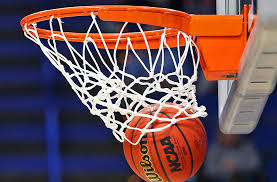
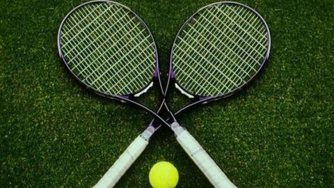
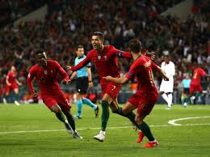
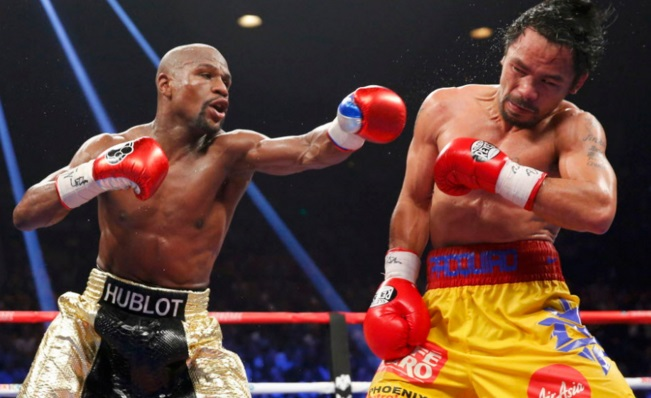
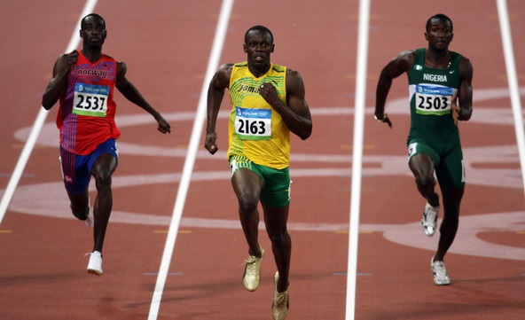
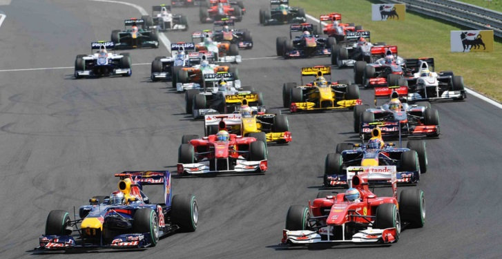
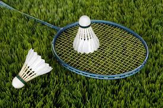

Niko-Man
Niko-Man
Programming is the process of taking an algorithm and encoding it into a notation, a programming language, so that it can be executed by a computer. Although many programming languages and many different types of computers exist, the important first step is the need to have the solution. Without an algorithm there can be no program.

Basketball is also my another favorite hobby of all time! I got involved in basketball because i was interested in the sport and i started playing it everyday from when i was a kid, also I got into my school basketball teams. Basketball is very enjoyable to play when you get to know the rules and all, that is why I am interested in the sport. I am currently playing it everyday after school and in school with my friends, I have improved enormously from a year ago.
A truly universal game and unlike the other team sports listed above Tennis is mainly an individual based game which is very popular across the world. Specially Its four biggest events called “Grand Slams” where top matches are often the most watched sports matches every year. Unlike the other sports Tennis is equally popular for men and women across the world. In fact Tennis is one of the rare sport in the world which represent gender equality with same prize money for men and women competitions.
Football’s dominance over the globe is so obvious that it really shouldn’t be a surprise for anyone to see football’s name at the top of the list. The Beautiful Game, as they call it, has fans in as east as Japan and as West as America but nowhere on earth is this game more popular than in Europe. For most European nations, it’s not just a game rather it’s a way of life. FIFA World Cup is the most iconic event of this sport which is not only the most watched team event but also one of the highest paying competitions in the whole sports world.
Only combat sport in the list, boxing is truly global just like Tennis and Athletics. Floyd Mayweather and Manny Pacquiao has dominated the rich list in last 10 years while boxing also boost some of the greatest athletes to have ever lived. Boxing is major sport in countries like USA, Mexico, Latin America, United Kingdom, Philippines, Japan, Russia and some eastern European countries like Ukrain, Poland, Romania.
Athletic is by far the most global sport of them all which include several disciplines of course with Running, long jump and other track/field events. Athletics is also the high point of Olympic games as Athletics based sports are the most watched during any Olympic event. Some of the iconic athletes have been gold medalists in track and field sport and swimming. Current undisputed running/sprint sport champion Usain Bolt was the most talked about athlete during 2012 Olympic games in London and 2008 Olympics.
It might not be the most accessible sport in the world but in terms of sheer following Formula 1 is the undisputed biggest motor racing sport. With around 20 grand prix races every year in 20 different countries it is one of the most global sport around. Although the recent trend in TV viewership numbers is going down but Formula 1 still racks in healthy 500 million a year. the decline from around a billion to 500 million is largely down to Formula 1 turning to ppv in many countries.
Basketball is also my another favorite hobby of all time! I got involved in basketball because i was interested in the sport and i started playing it everyday from when i was a kid, also I got into my school basketball teams. Basketball is very enjoyable to play when you get to know the rules and all, that is why I am interested in the sport. I am currently playing it everyday after school and in school with my friends, I have improved enormously from a year ago.
